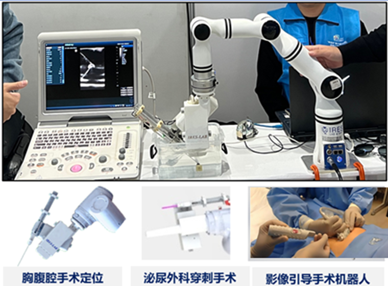
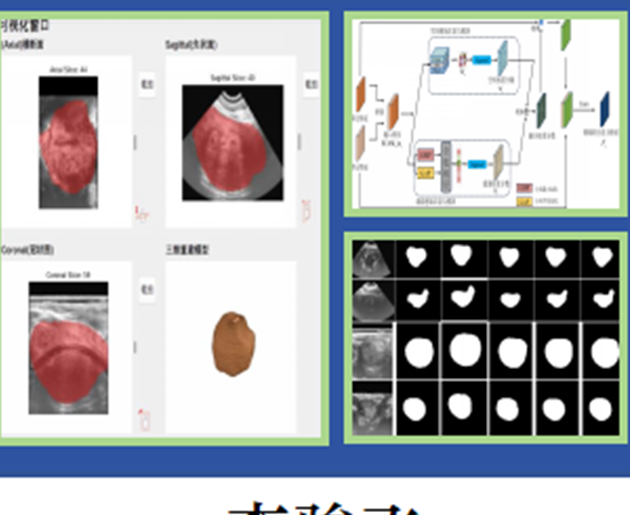

Image-guided surgical robot
医学影像与机器人融合推动精准微创治疗发展。本研究聚焦超声引导下软组织诊疗，研发具备轻量化机构、手眼协同、RCM规划与动态跟踪能力的手术机器人系统。通过软组织变形预测与视觉伺服控制，实现病灶精准定位及器械动态跟踪，并探索基于专家经验的模仿学习技术。成果应用于前列腺、肝胆等多部位穿刺机器人及经自然腔道柔性手术臂，支持肿瘤切除等精准操作。
See Details探索前沿研究领域，推动科技创新。

医学影像与机器人融合推动精准微创治疗发展。本研究聚焦超声引导下软组织诊疗，研发具备轻量化机构、手眼协同、RCM规划与动态跟踪能力的手术机器人系统。通过软组织变形预测与视觉伺服控制，实现病灶精准定位及器械动态跟踪，并探索基于专家经验的模仿学习技术。成果应用于前列腺、肝胆等多部位穿刺机器人及经自然腔道柔性手术臂，支持肿瘤切除等精准操作。
See Details
超声作为实时影像，能够发挥机器人实时定位的优势，弥补运动误差，同时针对单一模态医学成像对于人体组织器官信息 成像的局限性，我们团队开发了基于多角度的多模态影像融合方法，建立软组织变形数学模型，实现超声与核磁影像的弹 性配准，有效利用不同模态影像的互补性，从多种层面提供病灶区域及其周围区域的更多信息，提高临床诊断的准确性。
See Details
手术机器人目前主要通过遥操作实现精细化作业，人在回路的方式控制机械臂运动。随着智能化发展，自主手术应于而生， 从目前的LoA 1-2级迈入LoA 3-4，重点解决受控环境中的关键手术任务自主化，推动复杂任务环境的高度全流程自主，达 到长周期手术的专家经验学习，技能泛化，在人体组织上进行稳健作业，实现具身智能操作的学习与控制。
See Details
人工智能已经改变了医学影像领域，能够快速准确地分析大量数据，检测超声、MRI和CT扫描中的细微异常，有助于早期疾病检测。我们团队开发AI解决方案，并将其集成到用于指导程序和培训的系统中，展示了它们对医疗诊断和治疗规划的重大影响。我们的算法能够识别人眼难以察觉的病变模式，提供更准确的诊断。
See Details
灵巧操作是机器人作业的关键，也是类人形机器人的关键组成。手臂协同能够完成对物体的抓取、定位及复杂场景应用。 通过视觉完成对场景的理解与目标定位，控制机械臂与灵巧手实现对物体的精准定位与操作。基于视觉-语音-动作等模型， 采用数据训练，实现端到端的技能学习与稳健泛化，并结合操作精度实现精细调整，达到高精度应用。
See Details
模块化机器人由于其具有自组装、自重构等独特的结构生成、变换能力，在非结构化环境和未知作业场景中具有潜在的应用价值，一 直以来是智能机器人领域的研究热点和前沿方向。受到蚁群等社会性昆虫的激发，机器人能够通过群体优势克服个体的单一功能弱势 ，从而提高系统的任务执行能力。近年来，在深空探测等领域也涌现出一些概念验证，展示出模块化机器人群体的应用前景。项目组 先后研发4款模块化机器人，可自主对接、自主组装与自主重构，可实现地面、空间以及深空等不同场景的应用。
See Details